遊びで植物を育てよう
2025/05/04
去年ツル伏せしたクレマチスが開花しました。
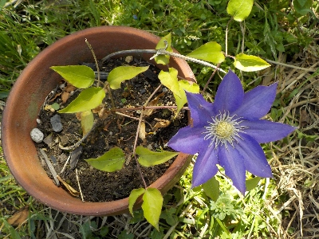
まだ小さいですが開花しました。
花が小さいし花色が薄いです。来年は立派な花を咲かせたいです。
【クレマチスTOP】
【花TOP】
【園芸TOP】
2024/11/10
4月にツル伏せしたクレマチスを切り離しました。
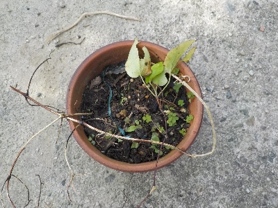
暑い時期に枯れたような状態になったので、いままで放置していました。
近頃、親株に緑が増えて調子がよさそうなので、ツルを切り離しました。
葉っぱが少ないのでちょっと心配です。
【クレマチスTOP】
【花TOP】
【園芸TOP】
2024/10/06
6月にしたクレマチスの挿し芽は失敗しました。
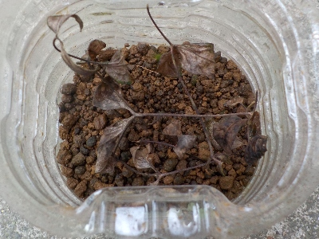
真っ茶色ですね。
めげずにきっとまたやるでしょう。
【クレマチスTOP】
【花TOP】
【園芸TOP】
2024/06/28
カザグルマだと思っていたらロウグチでした。
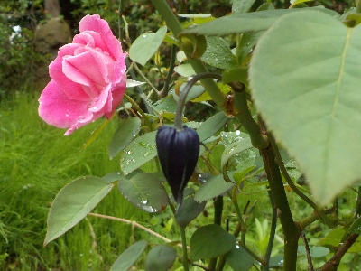
クレマチスの挿し芽はカザグルマが成功していて、ロウグチが失敗したと思っていましたが、ロウグチが成功していました。
そしてロウグチの花がありました。
地植えで勢いよく成長しているので、これから長く花が楽しめそうです。
先日にやったロウグチの挿し芽も成功するといいな。
【クレマチスTOP】
【花TOP】
【園芸TOP】
2024/06/18
クレマチスの篭口を挿し芽しました。
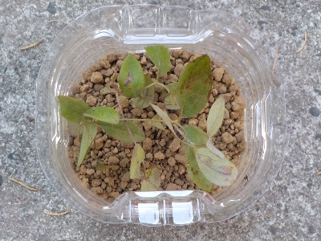
今まで成功したことない篭口の挿し芽にまた挑戦します。
今回はペットボトルの密閉挿しです。加湿になり過ぎないように、ちょっと水を少なくしてやりました。
成功して欲しいな。
【クレマチスTOP】
【花TOP】
【園芸TOP】
2024/05/15
ロウグチが咲きました。
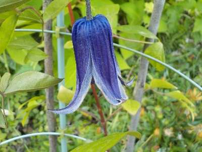
シーズンのはじめなので花が大きいです。
これからだんだん花が小さくなるってコトは肥料が足りないのかな？。
わかんないですね。今がいい季節だから花が大きいのかもしれない。
【クレマチスTOP】
【花TOP】
【園芸TOP】
2024/05/03
このクレマチスは今がピークだな。
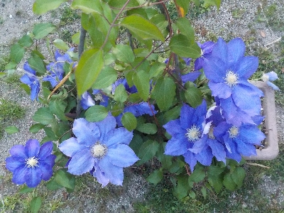
今年もキレイに咲きました。
後は散るだけか。
【クレマチスTOP】
【花TOP】
【園芸TOP】
2024/04/27
クレマチス（風車）が咲きました。
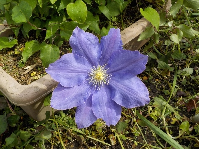
大きな花が咲きました。見事ですね。
このプランターは5年以上植えっぱなしなので、もう植え替えした方がいいんだろうな。
【クレマチスTOP】
【花TOP】
【園芸TOP】
2024/04/20
クレマチスのツル伏せをしました。

1本ツルが勢いよく伸びていたので、ツル伏せしました。
3節か4節埋めました。何箇所から根っこがでるかな。
【クレマチスTOP】
【花TOP】
【園芸TOP】
2023/10/08
挿し芽のクレマチスを地面に植えました。
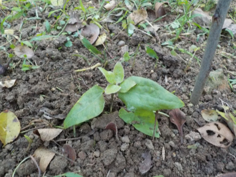
挿し芽のクレマチスに根っこが生えたので、バラの木の下に植えました。
クレマチスの地植えは初めてです。
【クレマチスTOP】
【花TOP】
【園芸TOP】
2023/08/27
またまたクレマチスの挿し芽を失敗しました。
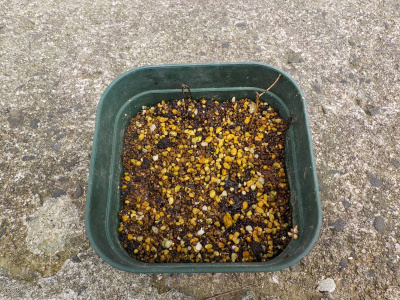
跡形もないです。
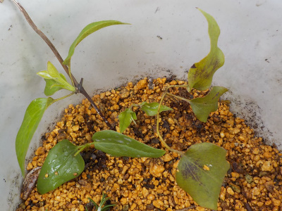
再び挑戦しますが、今までと同じ方法なのでたぶんダメかな。
【クレマチスTOP】
【花TOP】
【園芸TOP】
2023/07/09
クレマチスの挿し芽をしました。
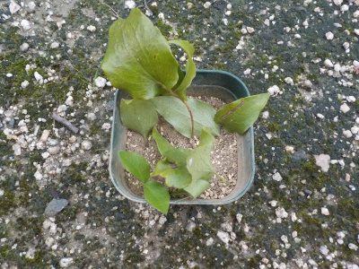
失敗が続いているクレマチスの挿し芽をまたしました。
本やネット情報だと、すらっと伸びたツルを3節取って挿しましょうってあるんですが、3節伸びてるツルがあまりなかったです。
しょうがないので、短い2節のツルを使って挿し芽しました。
【クレマチスTOP】
【花TOP】
【園芸TOP】
2023/05/13
明日は母の日ですが、クレマチスの花はほぼ終わっています。
2023/05/08
クレマチスの篭口が開花しそうです。
2023/04/23
クレマチスが開花しました。
2023/03/12
クレマチスの新芽が出ました。
2022/05/22
巨大な篭口の花が咲きました。
2022/05/08
母の日のクレマチス。
2022/05/05
クレマチスは人の目を引くようです。
2022/04/27
今年のクレマチスは赤紫です。
2022/03/06
クレマチスの芽が出ました。
2021/08/22
クレマチスが調子よく咲いています。
【クレマチスTOP】
【花TOP】
【園芸TOP】
2021/07/18
クレマチスの挿し芽が枯れました。
2021/07/03
クレマチスの挿し芽をしました。
2021/05/02
クレマチスの花はもうすぐ散ってなくなりそう。
2021/04/24
クレマチスが咲きだしました。
2021/03/28
クレマチスの種蒔きをしました。
2021/03/14
クレマチスのツル伏せが成功したようです。
2021/02/21
クレマチスの芽が2本出ました。
2020/09/27
今の時期にやっていいかわからないですが、クレマチスのツル伏せをしました。
2020/09/13
またまたクレマチスの挿し木に失敗しました。
2020/07/04
またクレマチスの挿し木に挑戦です。
【クレマチスTOP】
【花TOP】
【園芸TOP】
2020/06/07
クレマチスの挿し木は失敗です。
2020/05/10
今年は母の日用ギフトでクレマチスを見なかったかも。
2020/04/25
クレマチスの挿し木をしました。
2019/11/02
スポンジ挿し木の途中経過
2019/10/27
クレマチスの種ができたかな？
2019/10/20
1週間前にクレマチスの水挿しをしました。
2019/09/23
クレマチスのペットボトル挿し木は失敗しました。
2019/08/08
クレマチスの篭口の種があまりできません。
2019/07/15
クレマチスが2回目の開花シーズンです。
2019/06/30
ペットボトルでクレマチスの挿し木。
【クレマチスTOP】
【花TOP】
【園芸TOP】
畑仕事じゃないよ。
【おいしいものを食べよう。】【しっかり寝よう。】
【ソロ活をしよう!】【季節感のあることをしよう。】【動画視聴はほどほどに。】【当サイトの全てのコンテンツは無断転載禁止です。】